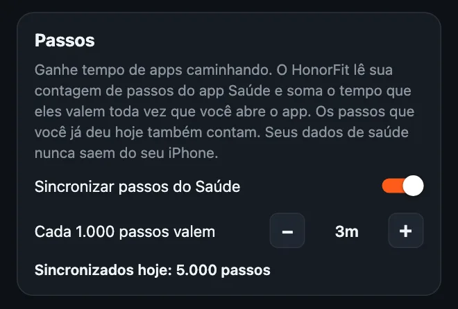
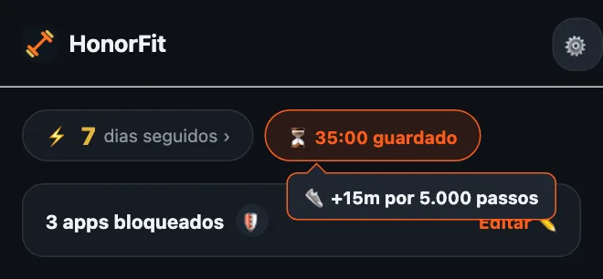

Agora seus passos podem valer tempo de tela
Oi, gente! Um post rapidinho sobre a novidade mais recente do HonorFit, que saiu direto do e-mail de um usuário. O HonorFit é o bloqueador de apps em que você ganha seu tempo de tela fazendo flexões (ou agachamentos, ou Kegel, ou o que você escolher) no sistema de honra. Sem câmera.
Um usuário perguntou: se o meu celular já conta meus passos, por que eles não podem valer tempo também? Boa pergunta. Então agora valem. O HonorFit consegue ler sua contagem de passos do Saúde (Apple Health) no iPhone ou do Health Connect no Android e transformar em tempo de apps automaticamente.
Como ativar
- Atualize o HonorFit para a versão 1.18.0 ou mais recente.
- Toque na engrenagem na tela inicial e procure o card Passos.
- Ative Sincronizar passos do Saúde (iPhone) ou Sincronizar passos do Health Connect (Android).
- Permita Passos quando o celular perguntar. O HonorFit só pede para ler os passos. Mais nada.
Pronto. Os passos que você já deu hoje contam na hora, e embaixo da chave aparece “Sincronizados hoje” com a sua contagem.

No Android você precisa do Health Connect, que vem integrado a partir do Android 14. Em celulares mais antigos, o HonorFit manda você para o Google Play para instalar. Você também precisa de algo que registre os passos no Health Connect, como Google Fit, Samsung Health ou Fitbit. O seu celular contar passos em algum lugar nem sempre quer dizer que ele compartilha esses passos.
Quanto tempo os passos valem?
Por padrão, cada 1.000 passos valem 3 minutos. Dá para mudar isso logo embaixo da chave, de uma fração de segundo até quanto você quiser.
| Passos | A 3 min por 1.000 (padrão) | A 5 min por 1.000 |
|---|---|---|
| 2.000 (mais ou menos uma caminhada de 20 minutos) | 6 minutos | 10 minutos |
| 5.000 | 15 minutos | 25 minutos |
| 10.000 | 30 minutos | 50 minutos |
Como eu escolheria: uma caminhada tranquila dá uns 100 passos por minuto, mais ou menos. Se você configurou o exercício por tempo Caminhada no padrão de 30 segundos por minuto, uns 5 minutos por 1.000 passos fazem seus passos e suas caminhadas registradas valerem mais ou menos a mesma coisa. Se você já anda bastante de qualquer jeito (cachorro, ida e volta do trabalho, trabalho em pé), deixe mais baixo para seus apps não desbloquearem de graça todo dia.
Quando os passos aparecem?
Toda vez que você abre o HonorFit. Isso inclui abrir pela tela de bloqueio quando o tempo de um app bloqueado acaba. Ele lê o seu total do dia, guarda os passos que você deu desde a última vez e mostra um pequeno “👟 +15m por 5.000 passos” na tela inicial.

Então o esquema é: saia para caminhar, depois abra o HonorFit, e o seu tempo está lá. Ele nunca paga duas vezes pelos mesmos passos. Se a última sincronização foi ontem, os passos que você deu ontem mais tarde entram primeiro na conta de ontem. Com “Zerar à meia-noite” ligado, esses passos da noite continuam aparecendo no histórico de ontem, mas não somam tempo hoje, porque o saldo de ontem já foi zerado.
O HonorFit não lê seus passos em segundo plano. Ele só lê quando você abre o app. Seu histórico de passos aparece em Histórico, numa visualização própria de Passos.
É grátis?
Sim, a sincronização de passos é grátis, e não tem limite de passos. O único limite da versão grátis que vale aqui é o de sempre: a versão grátis guarda até 2 horas de tempo de apps. Se o seu saldo estiver cheio, os passos a mais não ficam guardados para depois. O Pro (US$ 3 por mês ou US$ 19,99 em pagamento único nos EUA) guarda tempo sem limite.
Mais duas coisinhas: o modo difícil e o modo doente só mudam quanto as suas reps valem, não os seus passos. E passos não contam como treino para a sua sequência. Para isso, faça umas reps.
Um recado sobre o sistema de honra: se você registrar uma Caminhada por tempo e sincronizar seus passos, está recebendo duas vezes pela mesma caminhada. Ninguém vai te impedir, mas escolha um dos dois. Minha sugestão: deixe os passos cobrirem o andar do dia a dia e registre treinos quando forem treinos de verdade.
Aparecendo 0 passos?
- iPhone: o iOS nunca conta para os apps se você recusou a leitura dos passos. Ele simplesmente entrega zero. Abra o app Saúde, toque na sua foto de perfil, depois em Apps → HonorFit, e ative Passos.
- Android: abra o Health Connect (o card Passos do HonorFit mostra um botão Abrir o Health Connect quando não encontra passos) e confira se o HonorFit pode ler Passos. Depois confira se o seu app de passos, como Google Fit, Samsung Health ou Fitbit, está gravando os passos no Health Connect.
- Aí volte para o HonorFit. Ele confere de novo assim que você volta para a tela de Ajustes.
E os meus dados de saúde?
O HonorFit lê uma coisa só: sua contagem de passos. Ele nunca grava nada no Saúde nem no Health Connect, e esse número nunca sai do seu celular. Não existe conta nem servidor para ele ir. Os detalhes completos estão na política de privacidade (em inglês).
Se você tiver ideias como essa, a página de suporte (em inglês) cai direto na minha caixa de entrada. Esse recurso inteiro existe porque alguém escreveu.
HonorFit Blocker é um bloqueador de apps grátis para iPhone e Android. Ganhe tempo de tela com flexões, com qualquer exercício que você escolher e, agora, com seus passos. Sistema de honra, sem câmera, nada sai do seu celular.